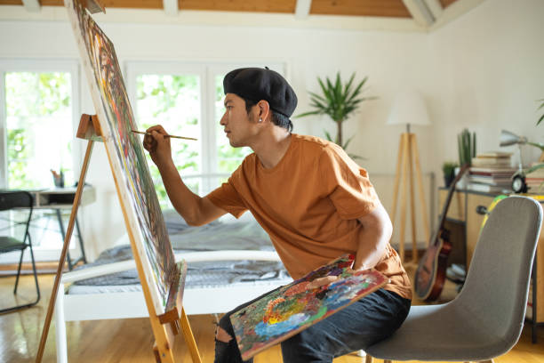

Popular Hobbies
Photography

Photography is the art of capturing images using a camera. It allows individuals to express their creativity and document moments in time.
Notable Photographers: Ansel Adams, Henri Cartier-Bresson, Dorothea Lange
Gardening

Gardening involves cultivating plants for food, beauty, or recreation. It can be a relaxing and rewarding hobby that connects people with nature.
Notable Gardeners: Monty Don, Gertrude Jekyll, Vita Sackville-West
Cooking

Cooking is the practice of preparing food for consumption. It can be a creative outlet and a way to explore different cultures through cuisine.
Notable Chefs: Julia Child, Gordon Ramsay, Alice Waters
Painting
Painting is a form of visual art that involves applying pigment to a surface. It allows for personal expression and can be therapeutic.
Notable Painters: Vincent van Gogh, Frida Kahlo, Pablo Picasso
Reading

Reading is the process of interpreting written language. It can be a source of knowledge, entertainment, and escape into different worlds.
Notable Authors: J.K. Rowling, George Orwell, Jane Austen
Traveling
Traveling involves moving from one place to another, often for leisure. It allows individuals to experience new cultures, cuisines, and landscapes.
Notable Travel Writers: Paul Theroux, Pico Iyer, Bill Bryson